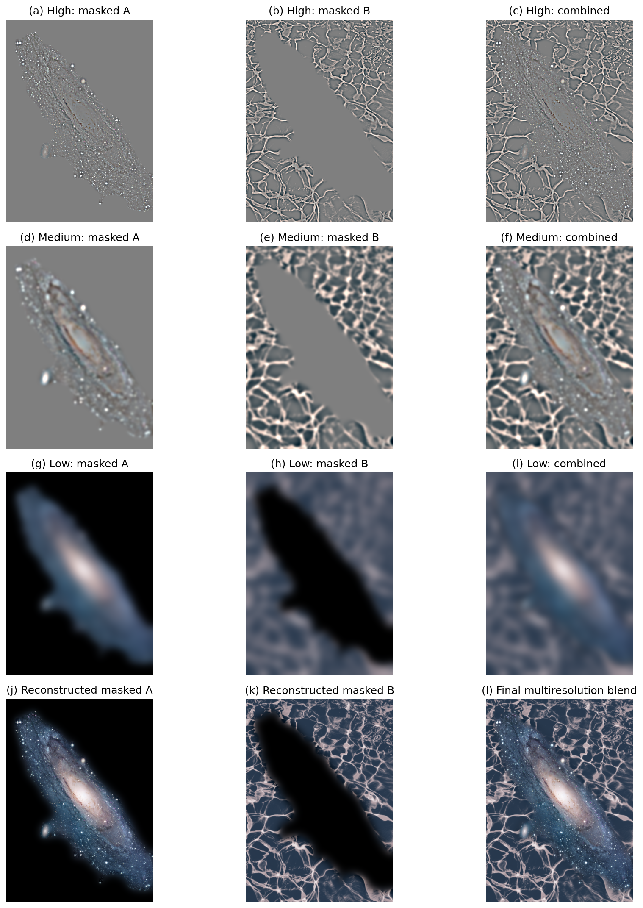
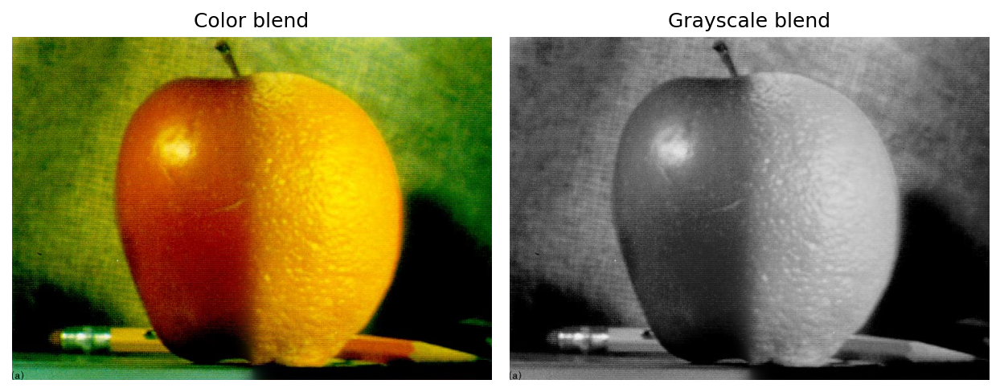

Part 2 · Fun with frequencies
Frequencies & blending
Amplify detail, combine two identities, and blend each spatial frequency over the transition width it needs.
2.1 · Image sharpening
Unsharp masking in one convolution
A Gaussian blur retains broad structure while attenuating high frequencies. Subtracting the blur from the original isolates detail; adding a scaled version of that detail back strengthens local contrast. Combining the operati Combining the operations gives a symmetric unsharp kernel, applied independently to the RGB channels.
Here, &alphr> is the shar pening amount: it controls how strongly the high-frequency detail is added back. An amount of 0 would leave the image unchanged; larger amounts make existing detail more pronounced and can create halos. I compare α = 0.5, 1.0, and 1.5 with a Gaussian standard deviation of 3 pixels. The explicit kernel is 25 × 25, extending four standard deviations in each direction. Reflect-101 boundary handling avoids introducing a black exterior into these color photographs. Because the kernel is symmetric, OpenCV's correlation operation gives the same result as convolution.


Can sharpening undo blur?
For the evaluation, I start with the additional sharp photograph, blur it at σ = 3, and sharpen that blurred version at α = 1.5. The re-sharpened result has stronger edges than the blurred image, but it does not recover the original fine detail. Unsharp masking amplifies what remains; it is not an inverse of the blur.

Additional blur-and-resharpen comparison: Taj Mahal

2.2 · Hybrid images
Two identities, separated by frequency
A hybrid adds a low-pass version of image A to a high-pass version of image B. Fine detail from B is more prominent nearby, whereas the broad appearance of A is intended to dominate at a distance or smaller display scale. The balance depends on alignment, filter scale, and the contrast of the source images.
Full process demonstration: Derek + Nutmeg
Derek supplies the low frequencies and Nutmeg supplies the high frequencies. I align the two eye landmarks with a similarity transform: translation, uniform scale, and rotation. After warping Nutmeg into Derek's frame, a softened support mask attenuates high-pass content outside valid image support. This reduces warp-edge artifacts but does not make the unrelated backgrounds correspond.

Cutoff-frequency selection
The selected scales are σlow = 8 pixels and σhigh = 5 pixels at the loaded image resolution. These are smooth Gaussian roll-offs, not hard frequency cutoffs. The comparison varies the low-pass sigma through 4, 8, and 12 while holding the high-pass setting fixed, then varies the high-pass sigma through 2.5, 5, and 7.5 with the low-pass setting fixed.

Filtered components

Frequency analysis
For each grayscale input, filtered component, and the final hybrid, I display the centered log-magnitude Fourier spectrum:
The low-um concentrates energy near the center; the high-pass component suppresses the central low fr equencies relative to outer detail. The hybrid combines the two contributions. Each spectrum is contrast-normalized for readability, so brigh tness should not be compared as an absolute energy measurement across panels.


The custom pairs use corresponding landmarks for alignment and the same low /high sigma settings, 8 and 5. These examples show the original inputs and final hybrid rather than repeating the full analysis.
| Pair | Broad, low-freq uency identity | Fine, high-frequency id entity |
|---|---|---|
| Derek / Nutmeg | Derek< /td> | Nutmeg |
| Ha rry / Voldemort | Voldemort | Harry |
| Lion / tiger | Li on | Tige r |

Bells &a m p; Whi stles
I compare grayscale with three alternatives: color only in the high-frequency component, color only in the low-freque ncy componen t, and both components in color. For Derek/Nutmeg, low-frequency c olor is the more useful choice for reinforcing Derek's broad skin-tone identity while p reserving the cat's mostly luminance-based detail. The high-frequency-only version looks nearly graysca l e because high-pass filtering removes broad color regions; color remains mainly in fine edges and t e xture. U sing both is more vivid, but the competing colors and backgrounds can also make the composite less coherent.

2.3 &mid dot; Gaussian and Laplacian stacks
Five scales, one image size
Un like a pyramid, a stack never downsamples. I keep five full-resolution levels: the original image followed by Gaussian levels at effective standard deviations 2, 4, 8, and 16 pixels. Successive blurs use incremental sigmas whose variances add to the target variance. No built-in pyramid functions are used.
Each Laplacian band is the difference between adjacent Gaussian levels. The last band is the coarsest Gaussian residual, not another difference. Adding all five bands reconstructs the original image apart from floating-point roundoff.


Recreating Figure 3.42, panels (a)–(l)
The three columns show masked apple contributions, masked orange contributions, and their sum. To display the complete five-level stack as three frequency rows, the high row groups L0 + L1, the medium row groups L2 + L3, and the low row shows L4. No bands are omitted. The bottom row reconstructs each source's weighted contribution and the final Oraple.

A hard cut changes abruptly at every frequency. A single broad feather can smooth large-scale differences but also mix fine texture across too wide a region. Instead, I build a Gaussian stack of the mask and use its corresp onding level to weight each Laplacian band.
Mask value 1 selects A and 0 selects B. I blur the binary mask before building its stack. Ea ch coarser mask level has a wider transition, so fine texture changes across a narro w boundary while broad color and illumination changes blend grad ually across a wider area.
Sample Oraples: vertical and horizontal seams
The sample masks are s tep functions selecting the left or top half of the apple. These validate both s traight -seam orientations before moving to non-straight masks.


Custom blend 1: a volleyball inside a tennis ball
The tennis image i s the background, and a small circular region reveals volleyball texture. The circle is c urrently centered at 50% of the image width and height, with radius 18% of the shorter side. The m ask is one outside the circle and zero inside, so tennis remains outside and volleyball appears inside. This curved mask is the main tennis/volleyball result.

Frequ ency contributions
These panels show how the circular blend is assembled. Columns are masked tennis, masked volleyball, and their sum; rows are grouped high frequencies, grouped medium frequen cies, and the low-frequency resi dual. Panels (j) and (k) sum every weighted band from each source. Th eir unclippe d sum is the same image reconstructed by the blending algorithm; the d isplayed result is clipped to [0, 1].

Custom blend 2: a galaxy beneath a swimming pool
This original 2.4 result uses the galaxy and the original pool photograph with an automatically segmented binary silhouette mask. The same galaxy-shaped region selects the galaxy in both pool experiments, so the gradient-map comparison changes only the pool image.


Bells & Whistles: gradient-mapped pool and galaxy silhouette
This separate experiment replaces only the pool with the gradient-mapped version. Both blends use the exact same automatically segmented binary galaxy silhouette, extracted by thresholding, morphological closing, and largest-component selection. This keeps the comparison focused on the pool image.



Supplementary custom straight-seam example
This se parate vertical-step-mask version uses the same tennis and volleyball inputs. It supplements, rath er than replaces, the circular main result and tests a straight seam on a custom pair .

Bells & Whistles
Texture in grayscale, palette in color
For tennis/volleyball, I compare the same circular blend in color and grayscale. Removing color makes the ball-surface texture and panel boundaries easier to inspect; color helps identify the two materials but can compete with those texture cues.

For galaxy/pool, I use the same binary galaxy silhouette, same multiresolution blend, and two pool versions. The second pool image is gradient-mapped with tones chosen to echo the galaxy. This isolates how palette coordination changes the composite.
Sample Oraple color comparison


Part 2 source files · Main takeaway · References and credits